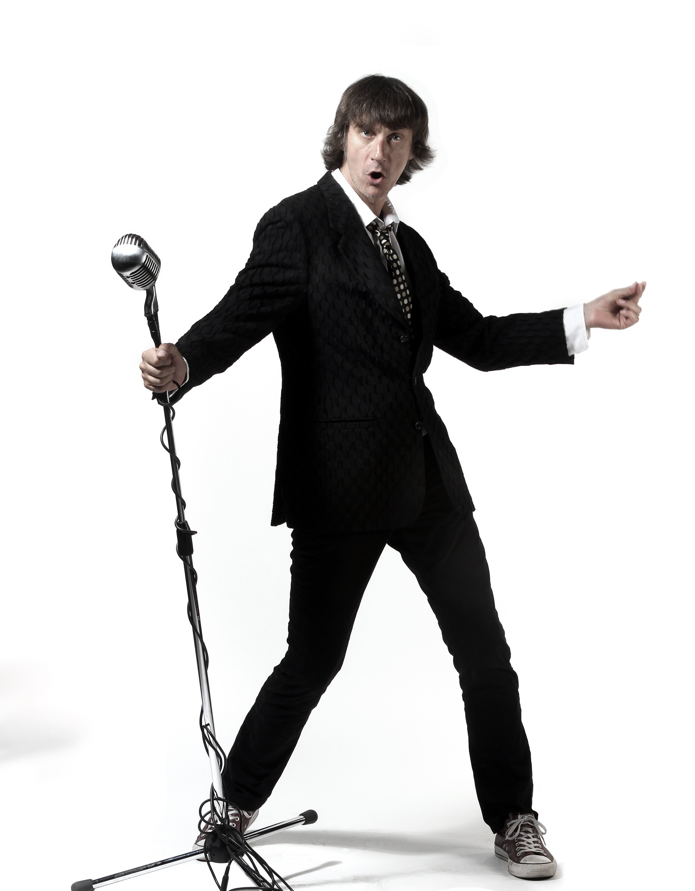
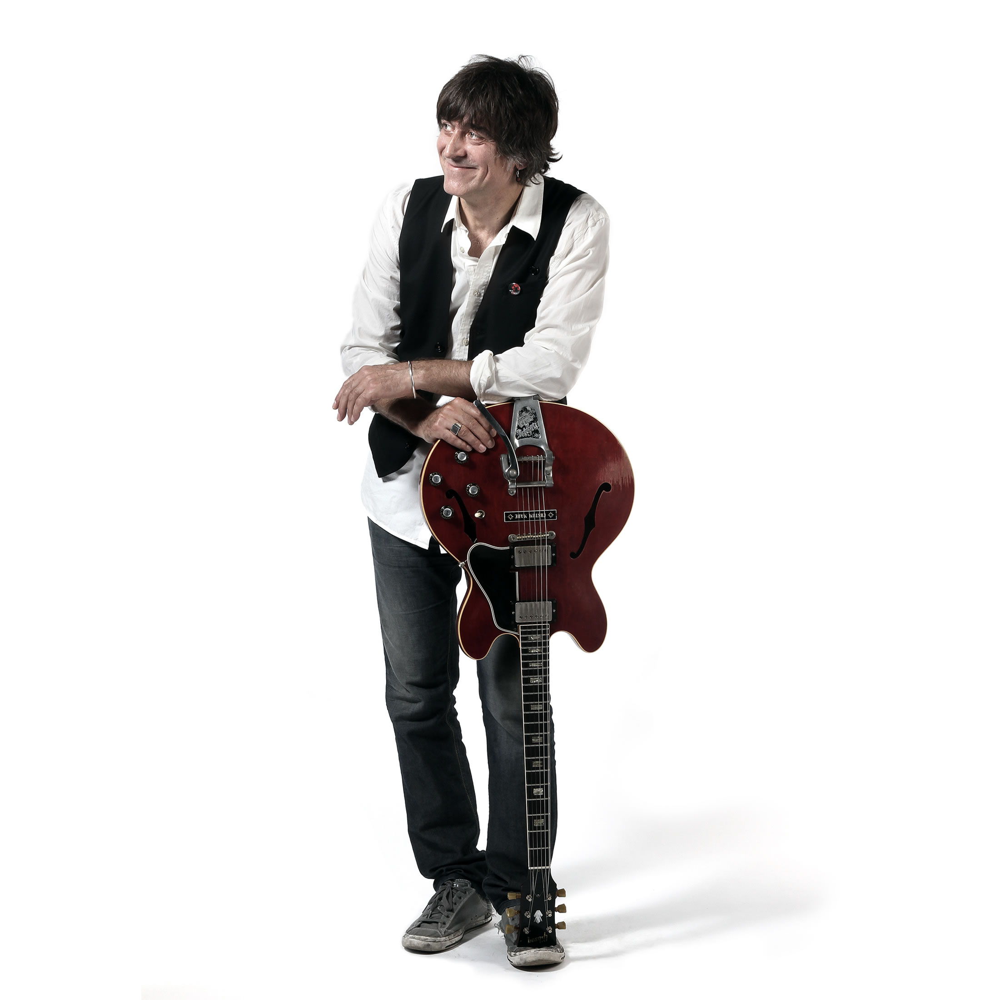
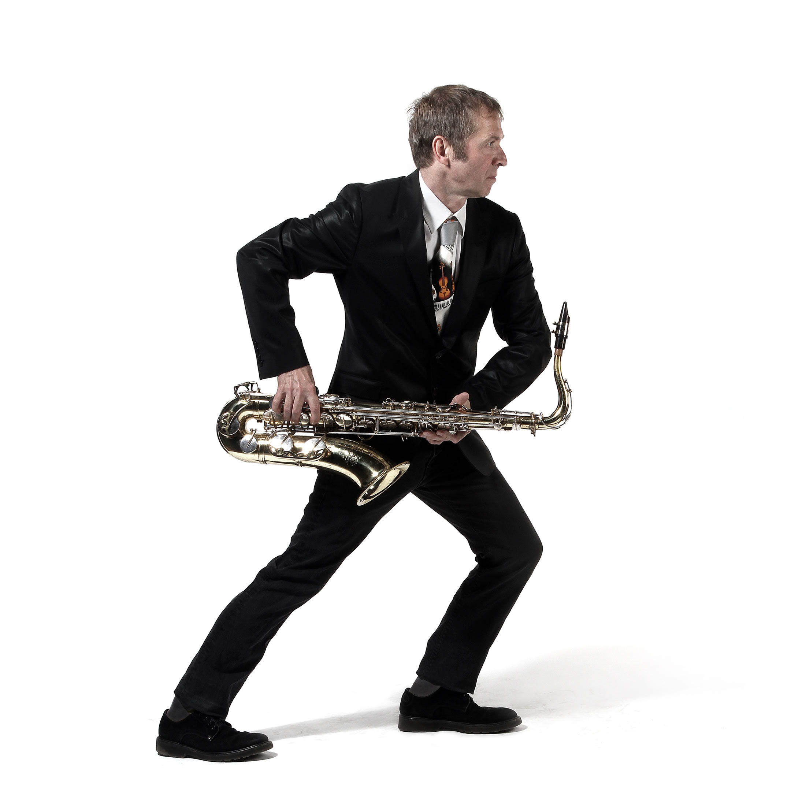
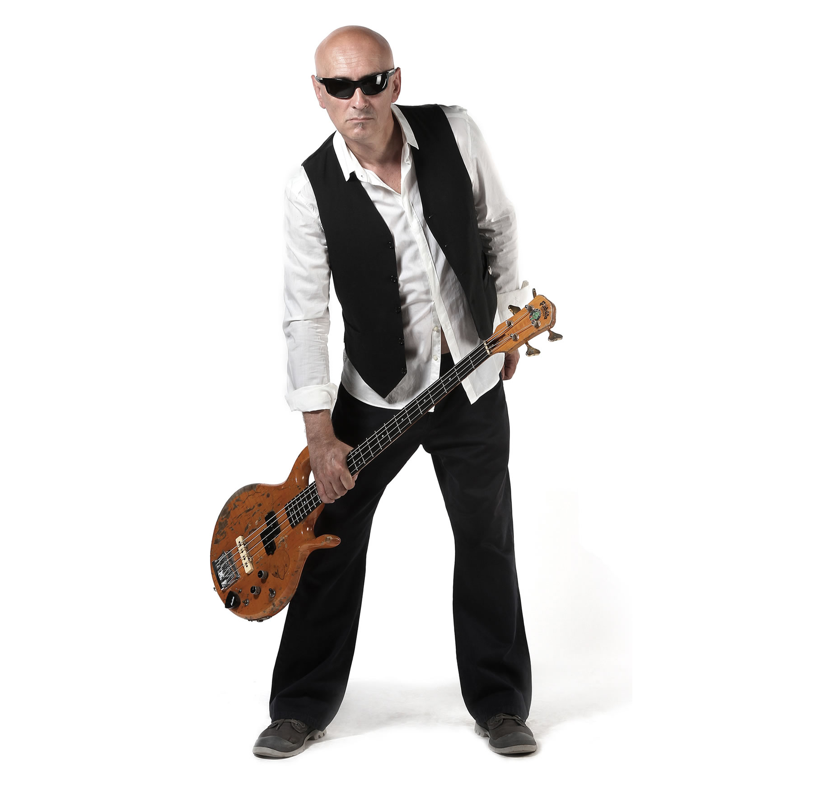

Davor Gobac |
Autor je većine muzike i tekstova i nameće se kao frontman (sve je ostalo legenda). Veliki je poklonik i poznavaoc punk-muzike, ali mu nije strana i ostala muzika. Velika ljubav mu je i slikanje. Ima osebujan stil i održao je već desetak izložbi, koje su bile jako posjećene. Originale ne prodaje, nego ih poklanja dobrim prijateljima, prodaje samo grafike i to skupo. |
 |
Vlatko Ćavar Brada |
Svira u grupi "Ritam s ovoga svijeta" od 1985. do ljeta 1987. kada se nakon višemjesečnih pregovora priključuje grupi PSIHOMODO POP. U lipnju iste godine biva mu priređeno vatreno krštenje na koncertu u Hrvatskom domu (Karlovac), tom prilikom svira samo pola repertoara. Od tog šoka se oporavlja i dan danas. Veliki poznavaoc blues i soul muzike (ima veliku zbirku ploča), uz to veliki fan ROLLING STONESA.Veliki kolekcionar gitara i starih pojačala. Hobi mu je namotavanje pick-up-a za gitare i restauracija istih. |
 |
Jurij Novoselić Kuzma |
Simpatizer Psihomodo popa od njegovih prvih koncerata. Pridružio se grupi za vrijeme priprema za album "Unpljugd" tijekom 1995. godine, kao gost na važnijim nastupima. Na jednom koncertu u Opatiji pao je prijedlog da se pridruži grupi kao stalan član. Nakon podužeg razmišljanja (12-13 sekundi) Kuzma je pristao, te od tada dijeli sudbinu s Psihomodo popom. Voli slušati raznovrsnu muziku od jazza pa do punka. |
 |
Smiljan Paradiš Šparka |
Osim što je autor muzike u bandu je zadužen za vođenje firme PSIHOMODO POP d.o.o. Veliki je štovaoc tehno i house muzike i posjetitelj partya. |
 |